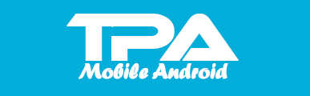

Tes Sinonim
sisa waktu :
1.
Piramid:Mesir :::
Garuda:Indonesia
Kanguru:benua Australia
Taj Mahal:Pakistan
NAZI:Komunis
Liberty:USA
2.
Ban:Mobil:Motor :::
Listrik:Televisi:Radio
Bunga:Mawar:Merah
Tubuh:Jantung:Otak
Asia:Mesir:Irak
Air:Dingin:Panas
3.
Lampu:Gelap:Terang :::
Siang:terang:Matahari
Minuman:Kenyang:Haus
Bulan:Bintang:Malam
Makanan:Lapar:Kenyang
Makanan:Kenyang:Lapar
4.
Beras:Nasi Goreng :::
Kayu:Meja
Kayu:Pasak
Kayu:Tripleks
Kayu:Gsnjal
Kayu:Papan
5.
Benang:Tenun:Kain :::
Baju:Celana:Kain
Benang:Jahit:Celana
Kain:Jahit:Baju
Kain:Baju:Celana
Celana:Baju:Kain
6.
Utara:Timur:Timur Laut :::
Barat:Utara:Barat Daya
Tidak mungkin:Relatif:Mungkin
Jelas:Positif:Tidak mungkin
Selatan:Barat:Barat daya
Timur:Barat:Utara
7.
Sopir:Mobil:Jalan :::
Montir:Bengkel:Jalan
Pesawat terbang:Pramugari:Udara
Masinis:Kereta api:Rel
Sado:Delman:Kusir
Sapi:Bajak:Sawah
8.
Cuaca:Ramalan:Meteorologi ::: Kata:Asal-Usul:...
Kosmologi
Morfologi
Etimologi
Etnologi
Pedagogi
9.
SAYA:DIA ::: KITA:...
Mereka
Kami
Semua
Kalian
Sama
10.
Rambut:Bandana :::
Baju:Setrika
Minum:Gelas
Bibir:Tebal
Kaki:Sepatu
Mata:Cokelat
11.
Pengacara:Hakim:Hukum :::
Nahkoda:Pilot:Sopir
Pelukis:Penyanyi:Pelatih
Pengarang:Penerbit:Wartawan
Guru:Dosen:Pendidikan
petenis:Perenang:Petinju
12.
Motor:Rusak:Bengkel :::
Pohon:Biji:Buah
Orang:Sakit:Klinik
Semi:Panas:Gugur
Lapar:Makan:Restoran
Belanja:Sayur:Pasar
13.
Februari:Mei:Agustus :::
Senin:Kamis:Minggu
Detik:Menit:Jam
Tahun:Bulan:Minggu
Selasa:Kamis:Sabtu
Burung:Pesawat:Udara
14.
Sepatu:Kaos Kaki :::
Gelas:Kaca
Handuk:Lembut
Adik:Ayah
Sendok:Garpu
Merah:Darah
15.
Lampu:Terang :::
Kaca:Beling
Cabe:Pedas
Darah:Merah
Sapu:Bersih
Air:Mendidih
16.
Suhu:Celcius :::
Ons:Bobot
Servis:Tenis
Massa:Energi
Cahaya:Terang
Hambatan:Ohm
17.
Yordania:Amman :::
Trinidad:Tobago
Indonesia:Malaysia
Yunani:Greek
Turki:Ankara
Australia:Selandia Baru
18.
Panah:Busur ::: Senapan:...
Senjata
Berbahaya
Mesiu
Peluru
Selongsong
19.
Timur Laut:Tenggara:Barat Daya ::: Selasa:...:...
Rabu:Kamis
Kamis:Jumat
Jumat:Sabtu
Kamis:Sabtu
Jumat:Minggu
20.
Kamera:Lensa :::
Otak:Tengkorak
Manusia:Mata
Tubuh:Nyawa
Mulut:Gigi
Kacamata:Mata
Hasil Akhir
Anda menjawab benar
Total nilai anda adalah